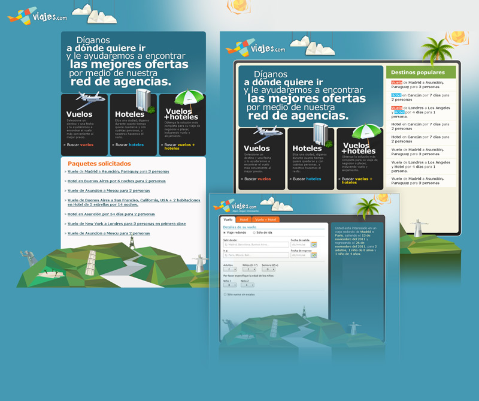

Diseño, HTML & CSS.
El logo (que me parece maravilloso en su simplicidad, aunque quizas no se aprecia a este tamaño) y las ilustraciones fueron obra de Rocko, un ilustrador increíble que trabajó en Chena Ventures un tiempo. Basandome en eso armé un sitio sencillo y "divertido". Esa fue la intención, al menos. No tuvimos oportunidad de averiguar que tan bien hubiera funcionado porque mientras estábamos trabajando en esto el dominio se vendió y acabou a festa.
